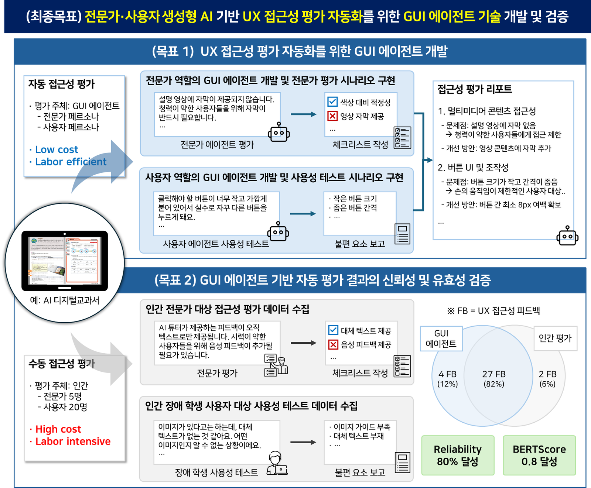

[Ongoing] 전문가·사용자 생성형 AI 기반 UX 접근성 평가 자동화를 위한 GUI 에이전트 기술 개발 및 검증
연구책임자 / 2025.09.01 ~ 2026.08.31 / 한국연구재단 (KRW 100 million)
전문가·사용자 생성형 AI 기반 UX 접근성 평가 자동화를 위한 GUI 에이전트 기술 개발 및 검증 (Development and Validation of a GUI Agent for UX Accessibility Evaluation Automation based on Expert/User Generative AI)
기간: 2025.09. ~ 2026.08.
Funding: National Research Foundation of Korea (KRW 100 million)
기존 웹 접근성 평가는 인간 전문가의 수동 진단이나 실제 사용자 대상 평가에 크게 의존하여, 시간과 비용이 많이 들고 대규모 검증이 어렵다는 한계가 있었습니다. 본 프로젝트의 목표는 이러한 의존성을 해소하고, 웹 접근성을 자동으로 진단할 수 있는 전문가·사용자 생성형 AI 기반 GUI 에이전트 를 활용한 UX 접근성 자동 평가 기술을 새롭게 개발 및 검증하는 것입니다. 이를 통해 누구나 접근 가능한 디지털 환경 구축에 기여하고자 합니다.
English Summary:
Conventional web accessibility evaluation has heavily relied on manual diagnosis by human experts or evaluations involving real users, resulting in significant time and cost limitations and making large-scale validation difficult. The aim of this project is to develop and validate an automated UX accessibility evaluation technology utilizing expert- and user-simulating generative AI-based GUI agents capable of automatically diagnosing web accessibility, without relying on manual expert diagnosis or real-user evaluations.
